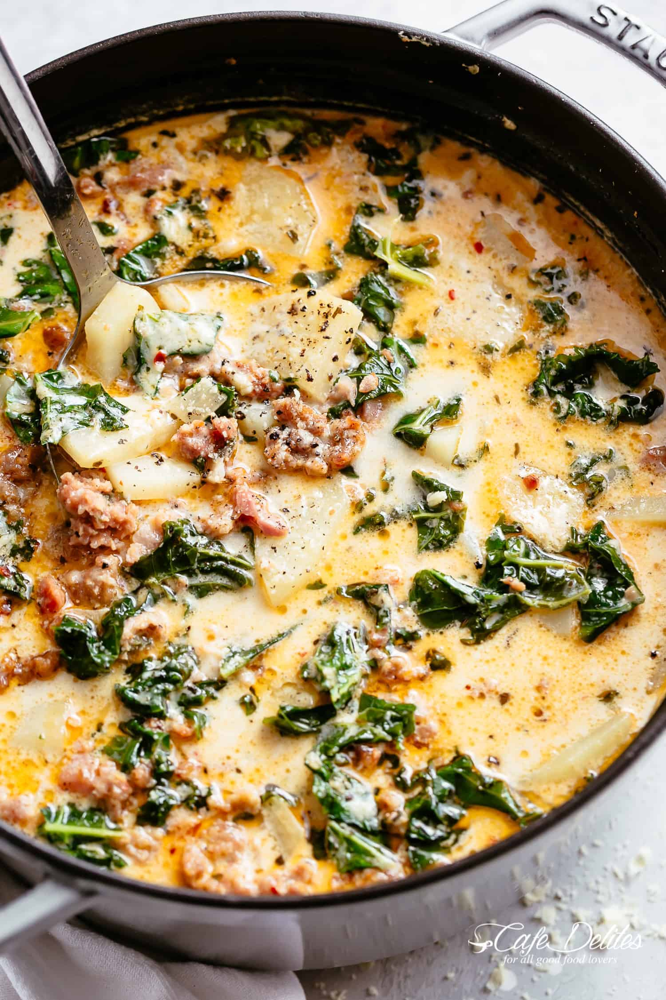

Copy-Cat Olive Garden Zuppa
Ingredients:
- 1 lbs Italian sausage
- 1/2 tsp red pepper flakes
- 1/8 to 1/4 cup diced onion
- 1 tbsp minced garlic
- 2 cartons chicken broth
- 5 large potatoes, sliced thinly
- at least 1 stalk of kale
- 2 to 3 slices of crispy bacon (Optional)
- 1 cup of heavy cream
Directions:
- Brown the sausage. Once cooked, remove as much grease as desired.
- Add the red pepper flakes and onion. Cook until onion is soft, then add the garlic.
- Cook until garlic is fragrant.
- Then add the chicken broth and potatoes.
- Bring the soup to a boil and cook until potatoes are soft.
- Add pieces of kale leaves, diced bacon, and cream.
- Enjoy!